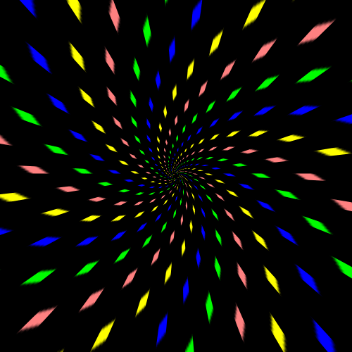

. . .
Here we go with the Instructions/Help Guide
▶/⏸:It is advisable to pause the game whenever game contorllers(like speed,snake size,game width and height) are operated or feel like taking a small break during the gameplay
üì∂üîÄto SWITCH b/w LEVELS: One can switch b/w levels at one's convenience at any part of the game
üíØSCORE DISPLAY:Gets updated/increased as soon as the snake takes the food as follows:
üü¢level 0/level 1:score increases by 1
üü°level 3:score increases by 2
üü†level 4:score increases by 3
üî¥level 5:Boundary walls :
Activated: Score increases by 3
Dectivated: Score increases by 2
üü•FullScreen:Enhances your gaming experience.(Enabled only for devices with screen width > 1000px)


To control the DIRECTION(movement) of the Snake in the Game:-
Using Keyboard:
⏫(UP) :W or ⬆ keys
⏬(Down) : S or ⬇ keys
‚è©(RIGHT) : D or ‚û°keys
⏪(LEFT) : A or ⬅ keys
On Touch Enabled Devices:SWIPE on the screen
(Go through the images)
⏭/⏮Game/Snake Speed Controller: As the name indicates,used to control the speed with which the snake moves.
üêçüîõüêçSnake Size Controller:Along with the size of the snake,FOOD size also increases.
Note :This controller gets disabled automatically in the computerized gameplay
⬜◻◽▫▪◾◼⬛:
Game Height and Width Controllers:Increases or decreases the the game/canvas area in the will of the user.
Note:
1.Snake Size, Game Width and Height controllers are available only in LEVEL 0 and LEVEL 1
2.Remember to pause the game while using the above controllers and Deactivate them by clicking on the window elsewhere(once activated,sliders/controller values can be altered with arrow keys on keyboard also which may effect the gameplay)


Helps the gamer in achieving HIGH SCORES faster at any point of time in the GAME.
(Can be switched b/w ON and OFF)
Note: This is available only in LEVEL 0 and LEVEL 1

Random orientation of MAZE:Available in LEVEL 2 and LEVEL 3.Maze orientation and positioning changes everytime these levels in the game are opened
FIXED Maze:Available in LEVEL 4.Maze orientation and position is fixed and remains unchanged even after restarting the level.
ACTIVE (Bounded):Level 1 and Level 3
INACTIVE (Unbounded):Level 0 and Level 2
In LEVEL 4:It is at the will of the player whether to activate or deactivate the border walls
GAME BACKGROUNDS...
